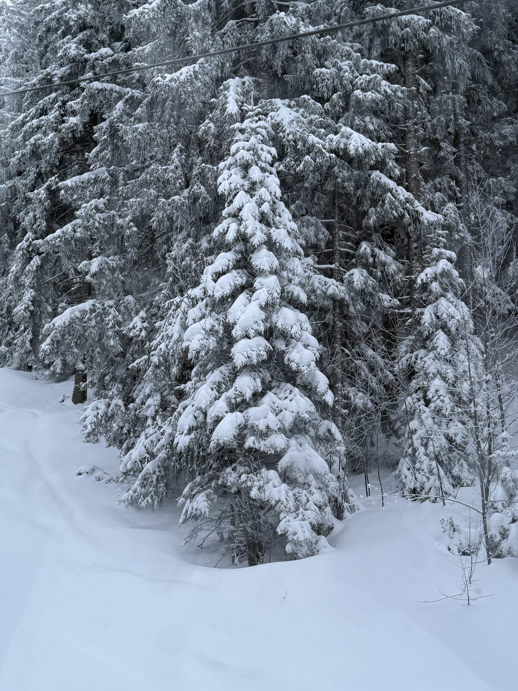

Noël au ski aux Carroz 2026 : ouverture des pistes et réservation

Début octobre, les mélèzes dorés rappellent que la neige approche. Pour qui rêve d'un Noël au ski, c'est le bon moment : les dates d'ouverture sont publiées, les vacances scolaires tombent à un moment très précis et les appartements avec terrasse se réservent tôt. Voici ce qu'il faut savoir pour Noël 2026 aux Carroz d'Arâches.
Une ouverture progressive, selon la neige
D'après les offices de tourisme de Haute-Savoie et des Carroz, le Grand Massif ouvre en plusieurs temps :
- À partir du 5 décembre 2026 : Flaine ouvre en premier, la plus haute station du domaine (jusqu'au 18 avril 2027).
- À partir du 12 décembre : l'office de tourisme des Carroz annonce l'ouverture du domaine côté Les Carroz.
- À partir du 19 décembre 2026 : ouverture de l'ensemble du Grand Massif, jusqu'au 11 avril 2027.
Précision importante : ces dates sont indicatives et dépendent de l'enneigement. Gardez donc une marge de souplesse, surtout pour une arrivée dans la première quinzaine de décembre.
Les vacances de Noël : du 19 décembre au 4 janvier
Les vacances de Noël 2026-2027 sont identiques pour les zones A, B et C : du samedi 19 décembre 2026 au lundi 4 janvier 2027, reprise des cours le 4 au matin. Le début des vacances coïncide donc avec l'ouverture complète du domaine : les 265 km de pistes et 62 remontées des cinq stations (Flaine, Les Carroz, Morillon, Samoëns, Sixt) sont à disposition des familles dès le premier week-end des congés.
Budget : le tarif PROMO court jusqu'au 15 novembre
Si vous skiez plusieurs semaines dans l'hiver, comparez l'abonnement saison au forfait journée. Le tarif PREM'S s'est terminé le 30 septembre ; le tarif PROMO reste valable jusqu'au 15 novembre 2026 : 732 € pour le forfait saison hiver des 26-74 ans, 488 € pour les 8-25 ans, avant le plein tarif. Le détail des formules figure dans notre article sur les forfaits Grand Massif 2026-2027.
Bien organiser l'arrivée
- Accès routier : sortie 19 de l'A40, puis environ 15 minutes jusqu'aux Carroz. Genève est à 50 minutes (45 minutes depuis l'aéroport). Le premier samedi des vacances est très chargé : partez tôt ou tard. Tous nos conseils sont dans l'article comment venir aux Carroz.
- Sans voiture : Léman Express (ligne L3) jusqu'à Cluses, puis la navette « Les Carroz Flaine Express ».
- Dès le premier jour : retirez forfaits et matériel dans l'après-midi pour être prêt à l'ouverture des remontées le lendemain.
Ce que le Lodge change pour un séjour de Noël
Le Lodge Le Chamois est un appartement de 83 m² pour 6 personnes, avec trois chambres, au 265 route de Flaine, Domaine du Bois Blanc. Le téléphérique des Carroz est à 3 minutes à pied. Le parking privé couvert dispose d'une recharge Green'Up, et le casier à skis chauffé du rez-de-chaussée garde chaussures et skis au sec. Le soir, la terrasse plein sud de 45 m² accueille le brasero et, en option, le bain nordique en bois, face aux sapins enneigés. Idéal pour un réveillon en famille ou entre amis, avec la conciergerie de Clémentine pour l'accueil.
Pour les familles, nous détaillons aussi le ski en famille aux Carroz : jardin des neiges, zone Figaro gratuite et formule Kid'O'Ski.
Réservez votre Noël aux Carroz
Appartement 4★ pour 6 personnes, terrasse de 45 m² et bain nordique, au centre des Carroz d'Arâches. Les semaines de Noël partent tôt.
Voir les disponibilités